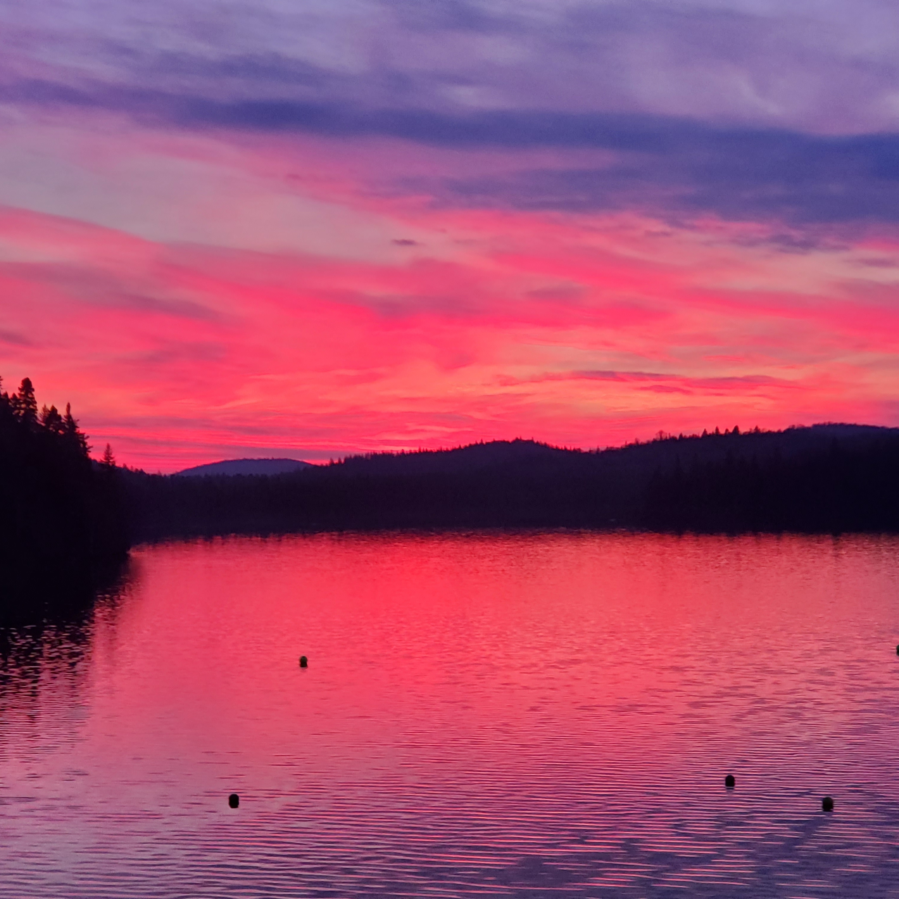
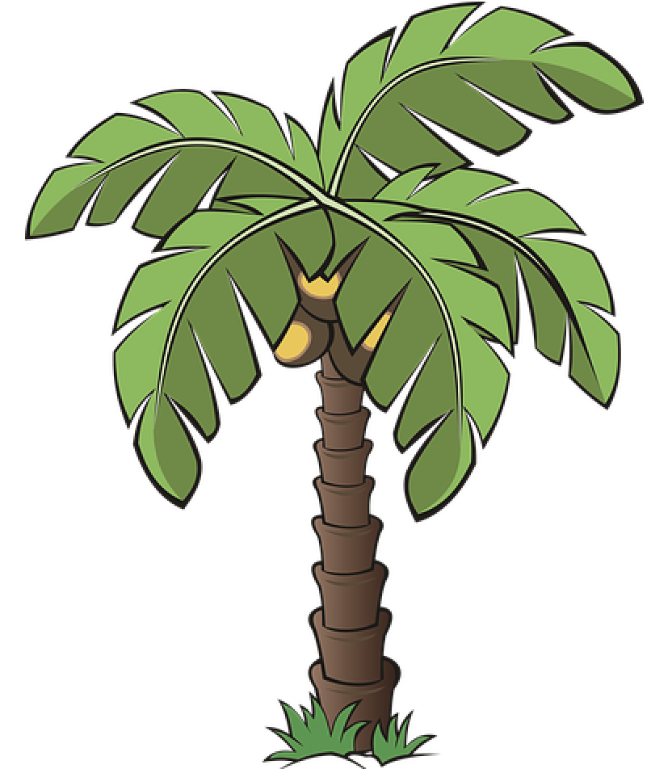
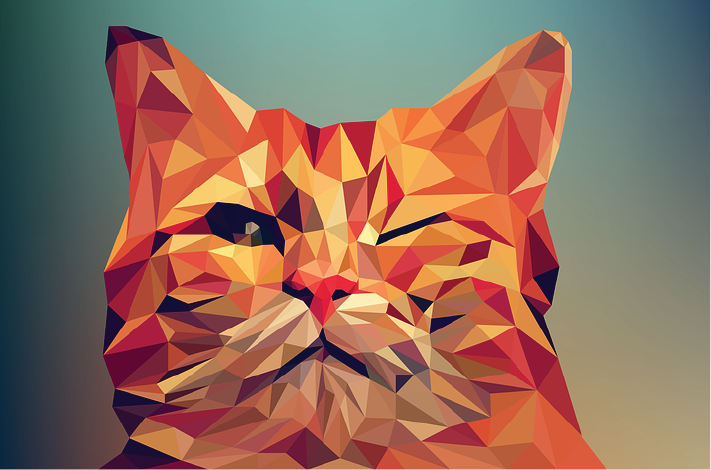
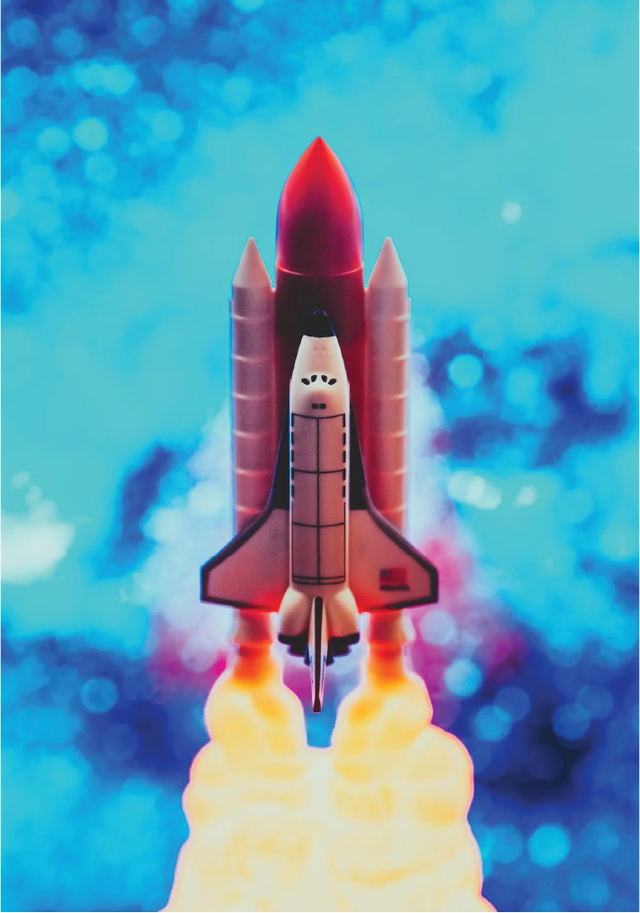
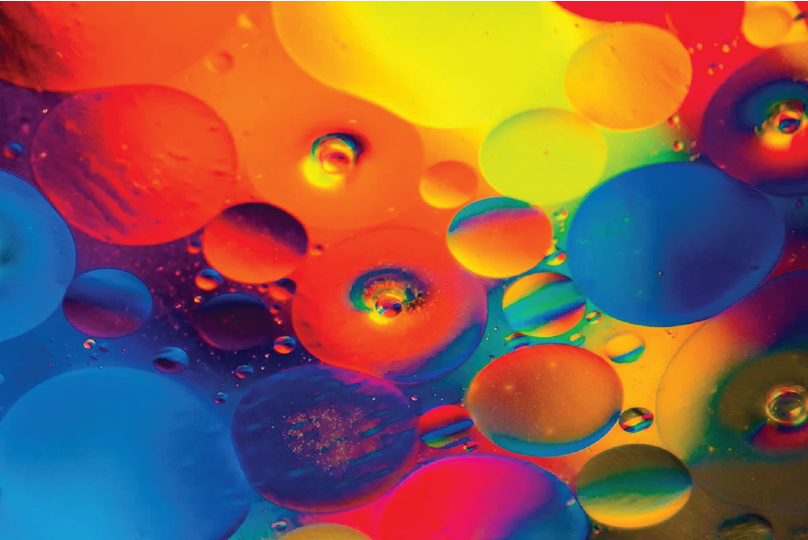
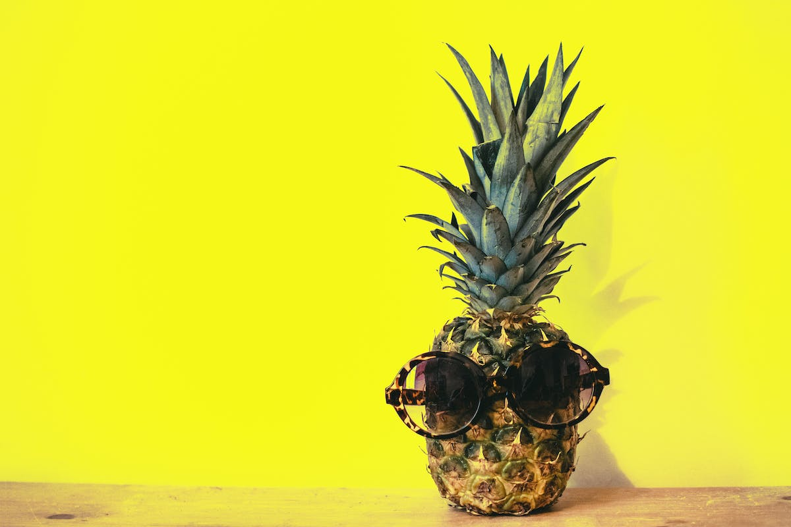
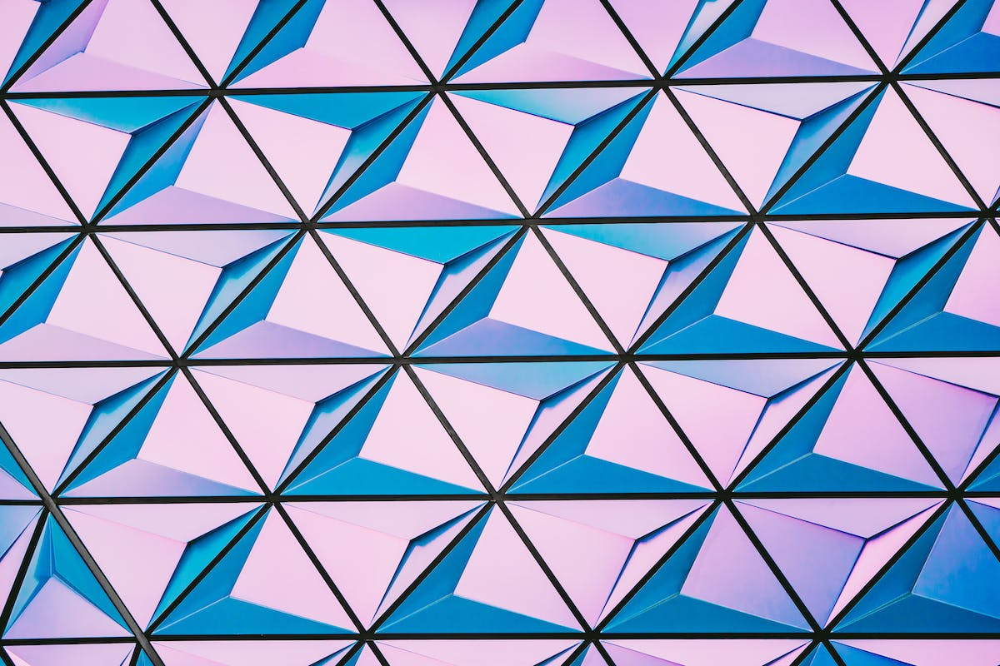

My Portfolio Website
This is my portfolio website. I am a second year student at Algonquin College in the graphic design program and I have loved creating and designing for as long as I can remember. I wanted to have a place where I could include all of my favourite artwork and inspirations in one place. Not all of the artwork shown on here are my own pieces however they all relate to things I enjoy creating in graphic design. This website is purley for educational purposes and is not being used for anything more. Hopefully you find some inspiration through checking out the posted graphic pieces.
   
This is a graphic I made for an invitation card to my dads wedding. The Grahic was created in Illustrator using the pen tool with each petal of the flower being made in a teardrop shape then pasted around the center of the flower. The leaves were designed in a similar way and the color palette for the piece was requested to be blues and yellows. I got inspiration for the piece from some flowers I had in a glass on my desk and from researching wedding invitation content.
The photo of a pineapple is something I find quite funny. I included it in this website because it gave me some inspiration to create a few art pieces that helped me get into the graphic design program. There is just something about the photo that draws me in, wheather that be the good use of color, or the fact that the pineapple has shades on. I did not take this image but found it on a copyright free photo website.
A very unique photo to say the least. The vector shapes resemble an abstract wall of triangles with a 3D effect caused by the different colors and angles used. I chose to include this piece for a similar reason to the pinapple photo. Although I didn't create it myself, I have used it as inspiration to develop other artwork throughout my weeks of designing a portfolio and I like the overall asthetic of it so I thought it would fit well with the other artwork here.